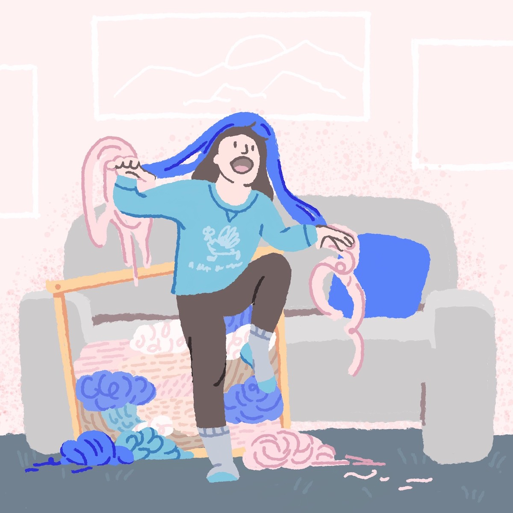
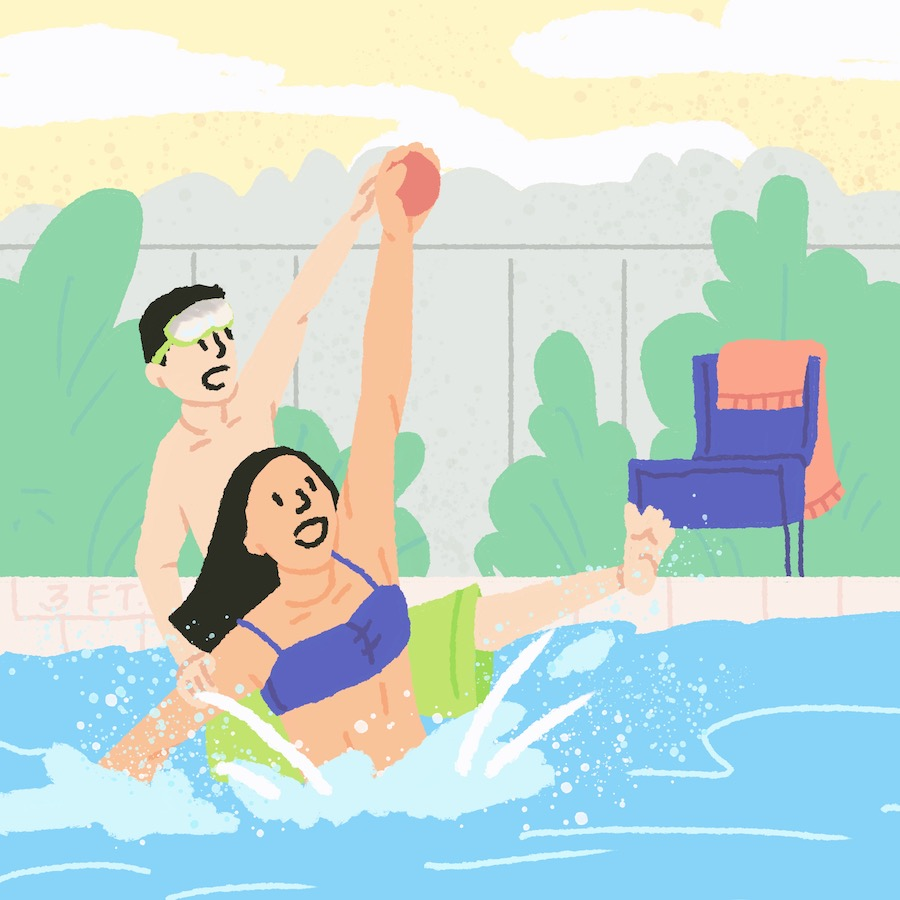
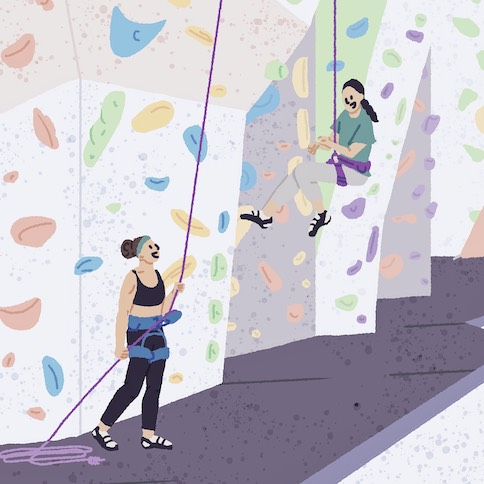
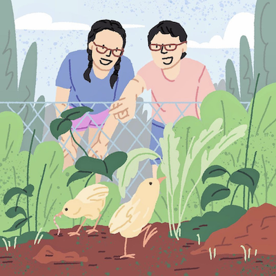
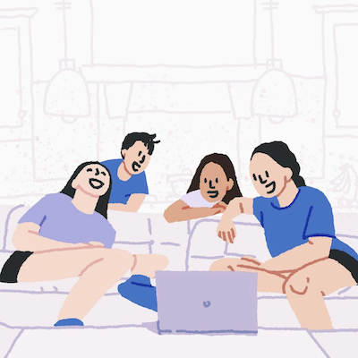
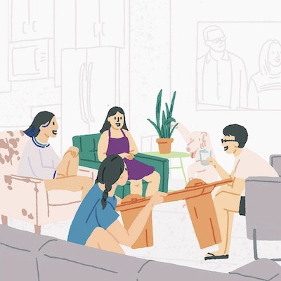
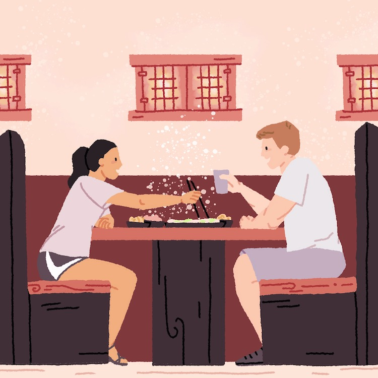
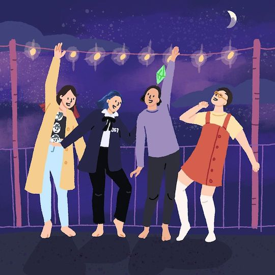
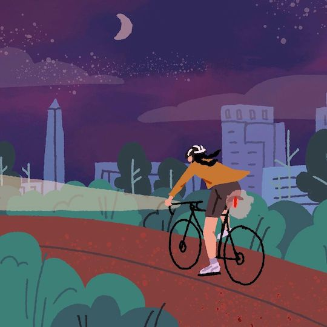

A Doodle a Week
My 2021 New Year's Resolution was to "get better at drawing", so I challenged myself to make one doodle a week. Each doodle was inspired by events from the week, and the series ended up being a sort of illustrated journal for the year. I'm not sure I'd to this again — it was oftentimes stressful to force myself to finish a doodle during busy weeks — but looking back it's clear how much I've improved (especially with drawing people), and now I have a visual snapshot of 2021!
Doodle no.1 | Adventures biking up Mt. Lemmon — over 7000 ft of elevation gain with snow at the top! This is a scene from the lower elevations where you could see cacti for miiiiiiiles 🌵🏔

Doodle no.2 | Fun bouldering and Dr. Seuss plants in Joshua Tree last week! Learned that juniper berries are essential for gin, that red buckwheat smells like cinnamon, and that every single climb here is crazy sandbagged 🧗🏻‍♀️😂
Doodle no.3 | Camping adventures last week on a dry lakebed & testing out if my sleeping bag was actually rated for below-freezing temps ❄️🌵

Doodle no.4 | Learning how to be flexible with our new office setup 🚙💻🏔

Doodle no.5 | Made it to Oceanside! Easy to forget it’s winter when you can surf after work 🏄🏻‍♀️☀️🏝
Doodle no.6 | A lovely weekend hike with the even lovelier Kate 🥾👯‍♀️🌳
Doodle no.7 | A stroll in La Jolla featuring delightful giant bubbles from @thebubblepirate 🧼🪄🌴

Doodle no.8 | The yarn monster emerges 🧶😈 I’ve been experimenting with fiber arts and becoming a big collector of Michael’s Rewards coupons these past few months — excited to share some projects I made!
Doodle no.9 | A majestic weekend among giants 🏕
Doodle no.10 | Running for cover when the rain surprised us during a climbing session! ☀️➡️🌧
Doodle no.11 | Still am a bumbly goon in the water, but I’m getting better at surfing thanks to an endlessly patient and supportive teacher 🏄🏻‍♀️☀️
Doodle no.12 | Last evening in California! heart is full and so is my tummy thanks to sushi & ice cream🍦🏝

Doodle no.13 | Sad to leave a great place and great companion, but excited to be back in DC just in time for spring 🌸
Doodle no.14 | Weekday bocce tournament complete with color coordinated teams 🟡🔴🔵🟢 DC is so lovely in the spring!
Doodle no.15 | Anna visited and we did exactly two things this week: eat gelato and talk about what gelato to make next 🍨🍧
Doodle no.16 | Early morning runs and rides on beautiful local trails 🚴🏻‍
Thankful for these outdoor spaces and thinking about how future generations can continue enjoying them — happy Earth Day🌲💚

Doodle no.17 | Pulled my first all-nighter re-designing a website for @phoenix_bikes as part of @aigadc ‘s 24-hour CreateAthon! Had an awesome time working with an extremely talented team to make this happen.. will share final designs once the site is live! 👩🏻‍💻🎨now to catch up on sleep...
Doodle no.18 | A glorious flower party to celebrate Grace’s birthday and the completion of a highly anticipated pong table 🌸📠ğŸ¨
Doodle no.19 | Zooming down car-free, care-free roads with Tony in DC 🚲👍🏼🚙👎🏼

Doodle no.20 | Got my second shot recently!!!!!!!!!!!!!!! So thankful, so relieved, so excited. ❤️💉

Doodle no.21 | A very rainy but very fun Nationals game — what a great way to wrap up a year in DC :’) See u soon 👋🏼⚾️🏟
Doodle no.22 | You know what they say, “there’s no place like home†ğŸ¡

Doodle no.23 | Turns out my brother and his random stick are *really* good at catching fish! 🎣

Doodle no.24 | My dad and I have lost monopoly many times in a row because my brother keeps maxing out the most expensive property and we KEEP LANDING ON IT 🙈🤑💸

Doodle no.25 | Showing my brother who’s BOSS 😎💦

Doodle no.26 | Weather has been awfully rainy lately, but on the bright side we’ve had some BEAUTIFUL panoramic rainbows! 🌈

Doodle no.27 | A weekend trip to one of my favorite places in the world, the Omaha zoo, woohoo! ğŸ ğŸ¯

Doodle no.28 | Back in the gym after a year and a half away! Feels so good to try hard, and it’s even better when you find a group of strong women to support & inspire you 💪🏼🧗🏻‍♀️

Doodle no.29 | Our little chicks are getting bigger (and louder!!) 🐥

Doodle no.30 | Picked up Karen and Michael from the airport, it’s a full Yan house now 🡠let the chaos begin!

Doodle no.31 | The best part of being with the sibs is watching all our old embarrassing videos together 😂📹

Doodle no.32 | Moved back to DC wahoo! 🦴👯‍♀️🏠

Doodle no.33 | Ah yes, the classic flash flood that knocks down an ENTIRE TREE RIGHT BEHIND YOU ON THE TRAIL ⚡️🌳😱

Doodle no.34 | A brief but beautiful return to the Upper Valley ⛰

Doodle no.35 | Scenic bouldering with a strong lady! 🧗🏻‍♀️

Doodle no.36 | Reunited!!! 😃😃😃

Doodle no.37 | Had a lovely weekend surfing and hanging out in Atlantic City, but the real highlight was Shep getting a 2 second cameo on a @bengravyy video let’s gooo🍍🏄🏼‍♂️

Doodles no.38-41 | Reggie on a roll! Lower production value because I didn’t bring my iPad, but I’ve got a sketchbook to document the bike adventure!

Doodle no.42 | Reggie on a roll finale! Now back to real life ğŸ˜

Doodle no.43 | The best kind of work remote setup! 💻🚙🏄🏻‍

Doodle no.44 | The roomie monster mash! 🎃

Doodle no.45 | It’s been a weird week, but keeping myself grounded thru peaceful morning rides to the climbing gym 🌒🚴🏻‍♀️
Previous Project
The Dartmouth Days
Next Project
DOC Logos